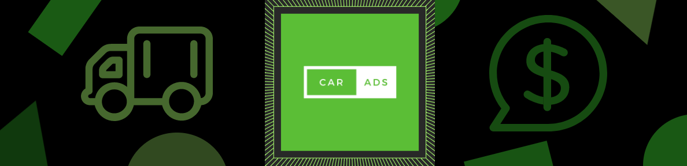

- How Much Do I Get Paid?
- Your rate fluctuates based on where you drive. On a busy road, you could make $15 an hour.
- Through the app we track how many total miles you have driven with Car Ads, and your rate increases for if you are a loyal customer.
- How Do I Get Paid?
- Is it safe?
- Car Ads windows are perfectly safe. They are still transparent so you can still see clearly out of the back of your car.
- Safety is our primary concern. We only replace the back windows of vehicles, so drivers are not looking to the side or anywhere but straight ahead.
Lea Overend. Car Ads Inc. Copyright 2017